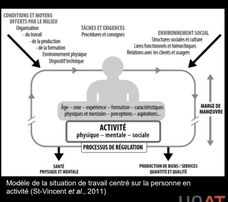

Ergonomie (définition)
L'ergonomie est la discipline scientifique qui étudie les interactions entre l'humain et les autres composantes d'un système (équipement, environnement, organisation), avec pour objectif d'adapter le travail à l'humain plutôt que l'inverse. En milieu minier, elle cherche à prévenir les troubles musculosquelettiques (TMS) et à améliorer la performance et le bien-être des travailleurs.
Table des matières
- Définition de l'IEA
- Mission et objectifs
- Distinction avec d'autres champs SST
- Application terrain
- Ressources
Définition de l'IEA
Selon l'International Ergonomics Association (IEA), l'ergonomie (ou facteurs humains) est la discipline scientifique qui s'intéresse à la compréhension des interactions entre les humains et les autres composantes d'un système. Elle applique la théorie, les principes, les données et les méthodes pour optimiser le bien-être humain et la performance globale des systèmes.
Le terme vient du grec ergon (travail) et nomos (loi, règle). L'ergonomie est donc la science des règles du travail.
Mission et objectifs
L'ergonomie poursuit deux finalités complémentaires.
| Finalité | Description |
|---|---|
| Santé et sécurité | Prévenir les TMS, la fatigue, les accidents et améliorer le confort |
| Performance | Améliorer l'efficacité, la qualité du travail, la productivité |
L'objectif central est l'adaptation du travail à l'humain : modifier les outils, les postes, les méthodes et l'organisation pour qu'ils correspondent aux capacités et aux limites du travailleur, plutôt que de demander au travailleur de s'adapter à un environnement mal conçu.
{kind=link}

Toucher l'image pour l'agrandirDistinction avec d'autres champs SST
L'ergonomie chevauche d'autres disciplines de la SST mais s'en distingue par son angle d'analyse.
| Discipline | Focus principal | Distinction avec l'ergonomie |
|---|---|---|
| Mettre en place un programme d'hygiène industrielle | Agresseurs chimiques, physiques, biologiques | Voir 🏠 Wiki Ergonomie, mines. Évalue l'exposition; l'ergonomie évalue la sollicitation musculosquelettique et cognitive |
| Sécurité industrielle | Risques d'accident, énergies dangereuses | Voir 🏠 Wiki Ergonomie, mines. Cible l'événement soudain; l'ergonomie cible la contrainte progressive |
| SST psychosociale | RPS, charge mentale, stress | Voir 🏠 Wiki Ergonomie, mines. Recoupements importants via Courants de l'ergonomie |
| Introduction à la toxicologie industrielle | Effets biologiques des contaminants | Voir 🏠 Wiki Ergonomie, mines. Champ distinct mais cofacteur de TMS (Vibrations + solvants, par exemple) |
Application terrain
Le secteur minier présente un éventail de contraintes ergonomiques particulièrement marqué.
- Postures contraignantes en chantier souterrain (sol inégal, plafond bas, espaces restreints). Le foreur, l'aide-foreur et le mineur travaillent souvent bras au-dessus de la tête, en torsion, ou accroupis.
- Manutention (pour toi) de matériel lourd (sacs de ciment, tuyaux, boulons d'ancrage, équipement de forage).
- Vibrations main-bras (jumbo, marteau-piqueur, foreuses) et corps entier (camions, chargeuses, transporteurs).
- Quarts atypiques : 12 heures, rotations jour-nuit, FIFO (fly-in fly-out).
- Environnement : chaleur en profondeur, espaces confinés, bruit constant.
L'ergonome ou le conseiller en SST mine intervient typiquement sur la conception des postes (cabines d'engins), l'achat d'équipement (outils moins vibrants, supports de charge), l'organisation du travail (rotation, pauses) et la formation.
Ressources
| Document | Type | Source |
|---|---|---|
| Définition IEA de l'ergonomie | Référence | International Ergonomics Association |
| Cours SST 1162 - Éléments d'ergonomie | Cours | UQAT |
| Guide d'évaluation des contraintes du travail associées aux TMS | Guide | INSPQ 2021 |
Articles wiki connexes
Pages qui pointent ici (21)
- 🏠 Wiki Ergonomie, mines Ergonomie
- 📖 Glossaire ergonomie Ergonomie
- 🚀 Démarrage rapide - Conseiller SST, ergonome Ergonomie
- Analyse de l'activité de travail Ergonomie
- Anatomie et biomécanique du dos Ergonomie
- Articulations Ergonomie
- Biomécanique Ergonomie
- Conception ergonomique du poste Ergonomie
- Courants de l'ergonomie Ergonomie
- Démarche d'analyse ergonomique Ergonomie
- Démarche d'intervention corrective Ergonomie
- Domaines de l'ergonomie Ergonomie
- Évaluation des risques de TMS Ergonomie
- Fondements Ergonomie
- Horaires de travail atypiques Ergonomie
- Intervention ergonomique Ergonomie
- Prévention des TMS Ergonomie
- Système musculaire Ergonomie
- Système musculosquelettique Ergonomie
- TMS (troubles musculosquelettiques) Ergonomie
- Travail sédentaire Ergonomie